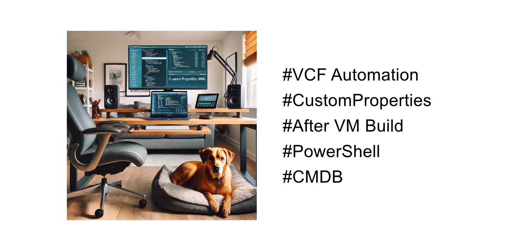
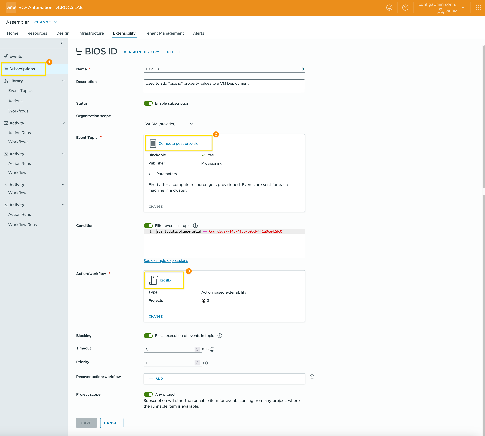
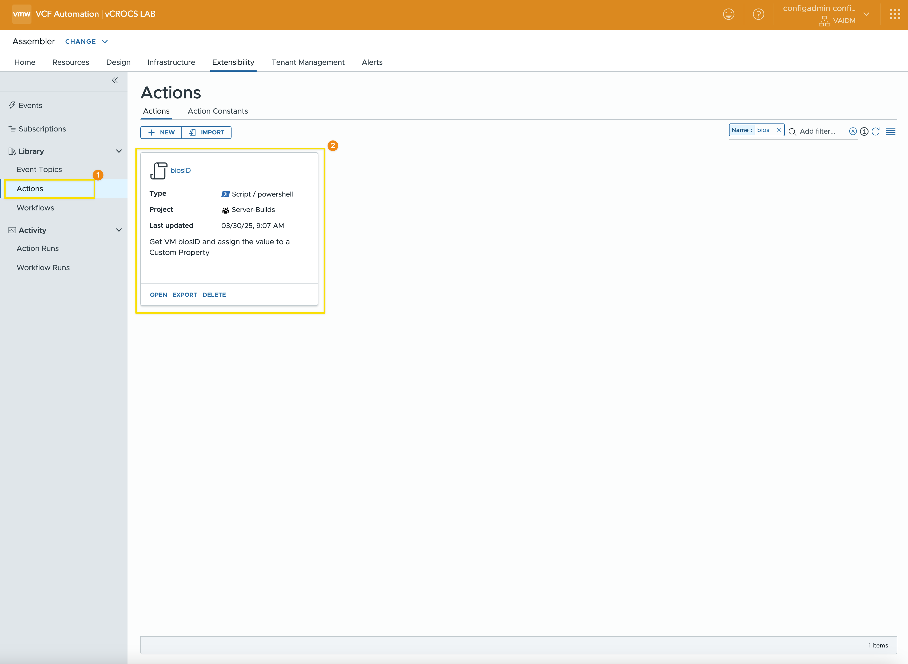
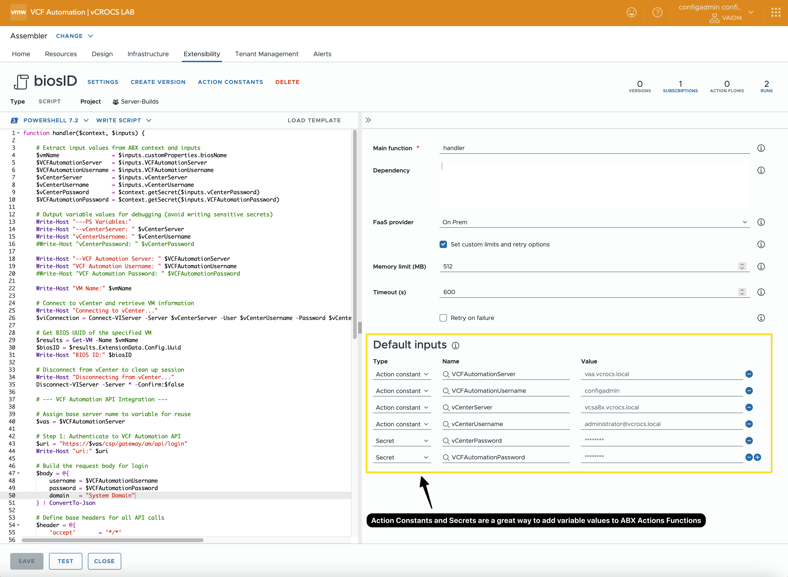

VCF Automation | CustomProperties

Add CustomProperties to a VM Deployment after the Virtual Machine is created.
Use CustomProperties in VMware VCF Automation to drive CMDB integration—keeping users and process logic out of vCenter where they don't belong.
**Note: VCF Automation 8.18.1 was used to create this Blog**
I recently received a great question about using CustomProperties in VMware VCF Automation to keep the CMDB up to date—without relying on direct access to vCenter. I'm a big fan of this approach. Many organizations aim to limit who and what can access vCenter to maintain a secure and streamlined environment. The fewer hands in vCenter, the better—keep it lean and mean.
As part of the conversation, I was also asked how to capture a VM property that isn't available out of the box in VCF Automation: the "bios id". While you can retrieve it with PowerCLI by connecting to vCenter, the goal was to avoid pulling data from vCenter continuously just to populate the CMDB.
Fortunately, I found a Broadcom TechDoc that explains how to add CustomProperties to an existing VM deployment. I'm all about real-world examples, so below is how I added the "bios id" as a custom property to a deployed VM—no direct vCenter calls required to keep CMDB accurate and current.
Steps:
Steps to add a customProperty to a VM deployment:
- Start with a Design Template that includes the customProperties you want to associate with the VM during the build process.
- Set up a Subscription that triggers an ABX Action to run Post-Provisioning.
- When the new VM deployment starts, you will not see the customProperty "bios id" until after the ABX Action runs.
- The ABX Action connects to vCenter, retrieves the VM's "bios id", and writes it back as a customProperty on the deployment.
- This action only needs to run once—the "bios id" is static.
Design Template:
- Sample Design Template YAML code
- YAML code shows some examples that can be used with any VM build
formatVersion: 2
name: Rocky-Basic
outputs:
__deploymentOverview:
value: |
**The following vSphere Virtual Machine has been provisioned with VMware VCF Automation.**
**Original Build Specs Used:**
IP: ${input.IP}
Memory(MB): ${input.totalMemoryMB}
CPU (Count): ${input.cpuCount}
Core (Count): ${input.coreCount}
**Connect to Server using Cockpit:**
http://${input.IP}:9090
**Check out these Blogs for Updates/Tips/Tricks on the VMware VCF Operations/Automation Products:**
**Brock Peterson:** https://www.BrockPeterson.com
**Dale Hassinger:** https://www.vCROCS.info
**Cosmin Trif:** https://www.cosmin.gq
**Link to vCROCS VCF Operations:**
https://vao.vcrocs.local
**Link to vCROCS VCF Operations for Logs:**
https://vaol.vcrocs.local
#cloud-config
inputs:
CustomizationSpec:
type: string
description: Customization Specification
default: LINUX
title: CustomizationSpec
VMName:
type: string
title: VM Name
minLength: 1
maxLength: 15
default: DB-ROCKY-204
IP:
type: string
default: 192.168.5.204
totalMemoryMB:
type: integer
title: Memory(MB)
default: 1024
cpuCount:
type: integer
title: CPU (count)
default: 1
coreCount:
type: integer
title: Core (count)
default: 1
folderName:
type: string
title: vCenter Folder
default: Rocky-Linux
enum:
- Rocky-Linux
- ESXi-01-VMs
- ESXi-02-VMs
VolumeGB:
type: string
title: 'Volume Size GB:'
default: '30'
resources:
Network_VMs:
type: Cloud.vSphere.Network
properties:
name: PG-VMs
networkType: existing
constraints:
- tag: Network:VM
vCenter_Rocky:
type: Cloud.vSphere.Machine
properties:
image: ROCKY9
name: ${input.VMName}
totalMemoryMB: ${input.totalMemoryMB}
cpuCount: ${input.cpuCount}
coreCount: ${input.coreCount}
biosName: ${input.VMName}
fqdn: ${input.VMName}.vcrocs.local
folderName: Rocky-Linux
storage:
bootDiskCapacityInGB: ${input.VolumeGB}
remoteAccess:
authentication: usernamePassword
username: root
password: ${secret.administrator}
customizationSpec: ${input.CustomizationSpec}
constraints:
- tag: VPZ:VM
networks:
- network: ${resource.Network_VMs.id}
assignment: static
address: ${input.IP}Subscription:
- Screenshot of the Subscription configured to trigger the ABX Action
- Utilizes the Post Provision Event Topic
- Includes a filter to run only for a specific Blueprint
- Defines the ABX Action to be executed

ABX Action:
- Screen shot of ABX Action

- Screen shot of ABX Action code and inputs
- I created a Blog that goes into detail about ABX Action Constants and Secrets. Take a look for more information.
- Using ABX Action Constants and Secrets is a recommended best practice for enhancing security and simplifying updates to values shared across multiple ABX Actions.

- ABX Action Function PowerShell Code
- Connects to vCenter to retrieve the "bios id" value
- Connects to VCF Automation to obtain an access token
- Adds a new customProperty to the VM deployment
- Confirms that the customProperty value has been successfully set
function handler($context, $inputs) {
# Extract input values from ABX context and inputs
$vmName = $inputs.customProperties.biosName
$VCFAutomationServer = $inputs.VCFAutomationServer
$VCFAutomationUsername = $inputs.VCFAutomationUsername
$vCenterServer = $inputs.vCenterServer
$vCenterUsername = $inputs.vCenterUsername
$vCenterPassword = $context.getSecret($inputs.vCenterPassword)
$VCFAutomationPassword = $context.getSecret($inputs.VCFAutomationPassword)
# Output variable values for debugging (avoid writing sensitive secrets)
Write-Host "---PS Variables:"
Write-Host "--vCenterServer: " $vCenterServer
Write-Host "vCenterUsername: " $vCenterUsername
#Write-Host "vCenterPassword: " $vCenterPassword
Write-Host "--VCF Automation Server: " $VCFAutomationServer
Write-Host "VCF Automation Username: " $VCFAutomationUsername
#Write-Host "VCF Automation Password: " $VCFAutomationPassword
Write-Host "VM Name:" $vmName
# Connect to vCenter and retrieve VM information
Write-Host "Connecting to vCenter..."
$viConnection = Connect-VIServer -Server $vCenterServer -User $vCenterUsername -Password $vCenterPassword -WarningAction SilentlyContinue -Protocol https -Force
# Get BIOS UUID of the specified VM
$results = Get-VM -Name $vmName
$biosID = $results.ExtensionData.Config.Uuid
Write-Host "BIOS ID:" $biosID
# Disconnect from vCenter to clean up session
Write-Host "Disconnecting from vCenter..."
Disconnect-VIServer -Server * -Confirm:$false
# --- VCF Automation API Integration ---
# Assign base server name to variable for reuse
$vas = $VCFAutomationServer
# Step 1: Authenticate to VCF Automation API
$uri = "https://$vas/csp/gateway/am/api/login"
Write-Host "uri:" $uri
# Build the request body for login
$body = @{
username = $VCFAutomationUsername
password = $VCFAutomationPassword
domain = "System Domain"
} | ConvertTo-Json
# Define base headers for all API calls
$header = @{
'accept' = '*/*'
'Content-Type' = 'application/json'
}
# Request an access token
Write-Host "Making VCF Automation API Call to get token..."
$response = Invoke-RestMethod -Uri $uri -Method Post -Headers $header -Body $body -SkipCertificateCheck
# Add access token to headers for subsequent API calls
$accessToken = "Bearer " + $response.cspAuthToken
$header.Add("Authorization", $accessToken)
# Step 2: Get machine ID based on VM name
$filter = [System.Net.WebUtility]::UrlEncode("name eq '$vmName'")
$uri = "https://$vas/iaas/api/machines?`$filter=$filter"
Write-Host "uri:" $uri
Write-Host "Making VCF Automation API Call to get Machine ID..."
$results = Invoke-RestMethod -Uri $uri -Method GET -Headers $header -SkipCertificateCheck
$machineID = $results.content.id
Write-Host "machine id:" $machineID
# Step 3: Patch the machine with BIOS ID
$uri = "https://$vas/iaas/api/machines/$machineID"
Write-Host "uri:" $uri
# Build the PATCH payload
$bodyObj = @{
customProperties = @{
biosID = $biosID
}
}
$body = $bodyObj | ConvertTo-Json
Write-Host "Body:" $body
# Send the PATCH request to update the BIOS ID
Write-Host "Making VCF Automation API Call to set BIOS ID..."
$response = Invoke-RestMethod -Uri $uri -Method Patch -Headers $header -Body $body -SkipCertificateCheck
Write-Host "biosID Response:" $response.customProperties.biosID
# Step 4: Verification – Confirm that the BIOS ID was updated
$filter = [System.Net.WebUtility]::UrlEncode("name eq '$vmName'")
$uri = "https://$vas/iaas/api/machines?`$filter=$filter"
Write-Host "uri:" $uri
$results = Invoke-RestMethod -Uri $uri -Method GET -Headers $header -SkipCertificateCheck
$biosID = $results.content.customProperties.biosID
Write-Host "Verify BIOS ID:" $biosID
# Return original inputs
return $inputs
}
Code to get customProperties from a deployment:
- PowerShell Code to make an API Call to VCF Automation to get a deployment CustomProperty values
- This sample code demonstrates how any process can retrieve customProperty values from VCF Automation. It uses an API call, so the logic remains consistent across use cases.
# ------------- Code to Get VCF Automation Deployment customProperty Values --------------
# Code works in DDC Lab
# Date: 2025.03.28
# Check if the powershell-yaml module is installed
if (-not (Get-Module -ListAvailable -Name powershell-yaml)) {
Write-Host "PowerShell-YAML module is not installed. Please install it using 'Install-Module powershell-yaml'."
exit
}
# Check if the VMware PowerCLI module is installed
if (-not (Get-Module -ListAvailable -Name VMware.PowerCLI)) {
Write-Host "VMware PowerCLI module is not installed. Please install it using 'Install-Module VMware.PowerCLI'."
exit
}
# Load YAML configuration file
$cfgFile = "VCF-Nested-Step-1-Host-Only-YAML.yaml"
$cfg = Get-Content -Path $cfgFile -Raw | ConvertFrom-Yaml
# Set the VM name to retrieve customProperties for
$vmName = "DB-ROCKY-208"
# Get the VCF Automation server from the YAML config
$vraServer = $cfg.Automation.autoURL
# Prepare login URI
$uri = "https://$vraServer/csp/gateway/am/api/login"
# Prepare login request body
$body = @{
username = $cfg.Automation.autoUsername
password = $cfg.Automation.autoPassword
domain = $cfg.Automation.autoDomain
} | ConvertTo-Json
#$body # Optional output for debugging
# Set standard request headers
$header = @{
'accept' = '*/*'
'Content-Type' = 'application/json'
}
# Authenticate and get access token
$response = Invoke-RestMethod -Uri $uri -Method Post -Headers $header -Body $body -SkipCertificateCheck
$accessToken = "Bearer " + $response.cspAuthToken
# Add Authorization header for subsequent API calls
$header.Add("Authorization",$accessToken)
# Define URI to fetch deployed machines
$filter = [System.Net.WebUtility]::UrlEncode("name eq '$vmName'")
$uri = "https://$vraServer/iaas/api/machines?`$filter=$filter"
#$uri
# Get list of VMs and extract customProperties for the matching VM name
$results = Invoke-RestMethod -uri $uri -Method GET -Headers $header -SkipCertificateCheck
# Output the customProperties
$results.content.customProperties
# vCenter Connection
vCenter:
server: vcsa8x.vcrocs.local
username: administrator@vcrocs.local
password: VMware1!
ignoreCertErrors: true
# A Single ESXi Host Connection
Host101:
server: 192.168.6.101
username: root
password: VMware1!
# VCF Operations
OPS:
opsURL: https://vao.vcrocs.local
opsUsername: admin
opsPassword: VMware1!
authSource: local
# VCF Automation
Automation:
autoURL: vaa.vcrocs.local
autoUsername: configadmin
autoPassword: VMware1!
autoDomain: System DomainLessons learned:
- Using customProperties with VCF Automation is a great way to keep 3rd party processes out of VMware vCenter.
- customProperty values can be added Post Provision of a new VM deployment in VCF Automation.
- Think of other customProperties you would want to add to a VCF Automation VM Deployment. This technique can be done for a lot use cases.
- The primary purpose of this blog post is to inform VCF Automation users that it's possible to add or modify customProperties for VM deployments even after the VM has been created.
In my blogs, I often emphasize that there are multiple methods to achieve the same objective. This article presents just one of the many ways you can tackle this task. I've shared what I believe to be an effective approach for this particular use case, but keep in mind that every organization and environment varies. There's no definitive right or wrong way to accomplish the tasks discussed in this article.
Always test new setups and processes, like those discussed in this blog, in a lab environment before implementing them in a production environment.